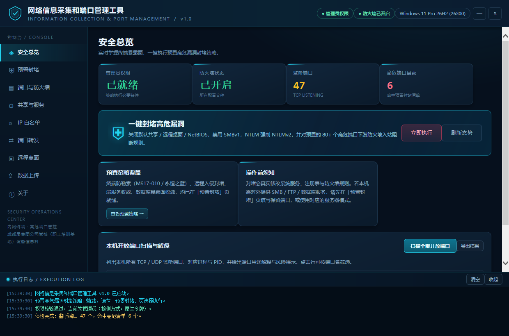
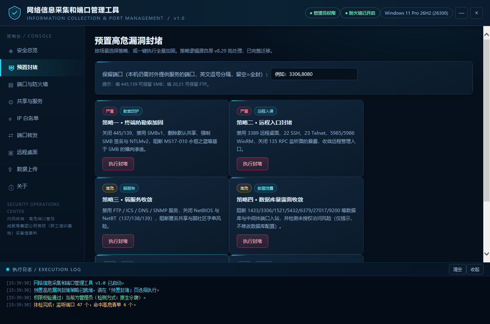
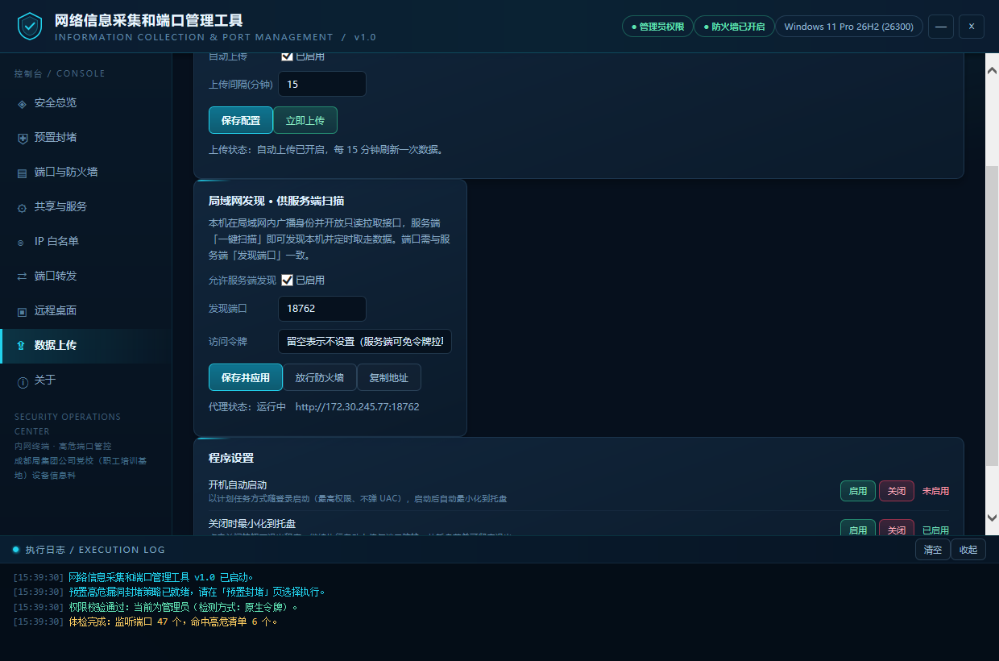
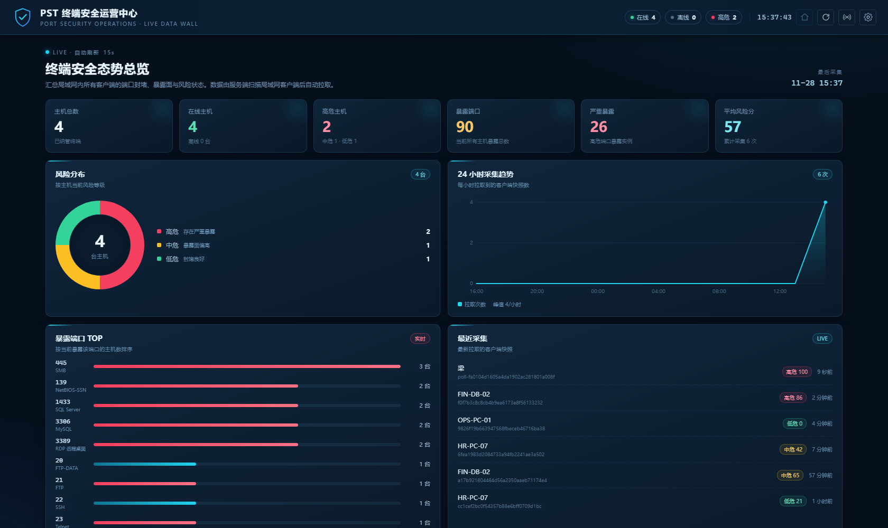
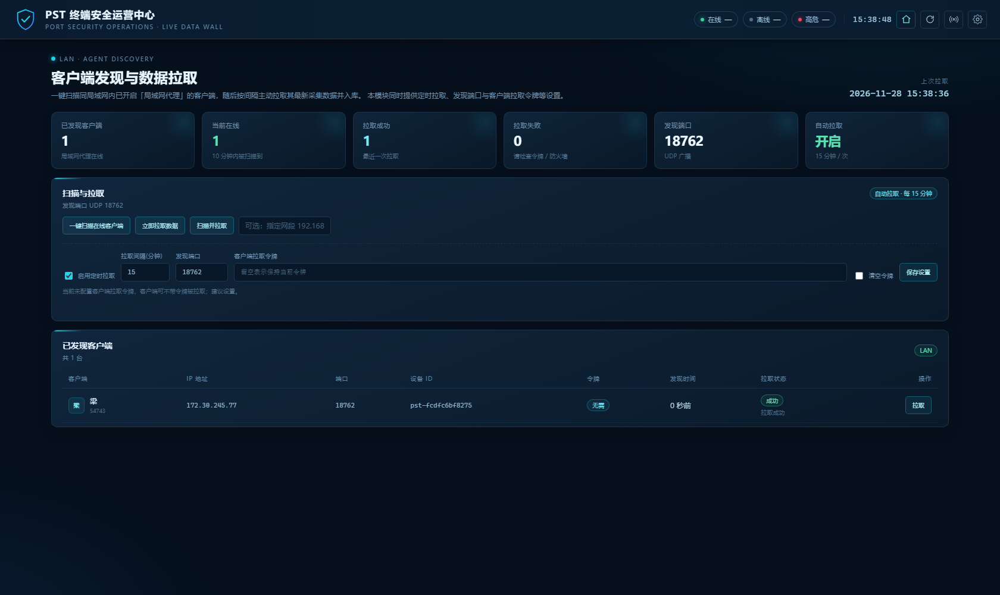
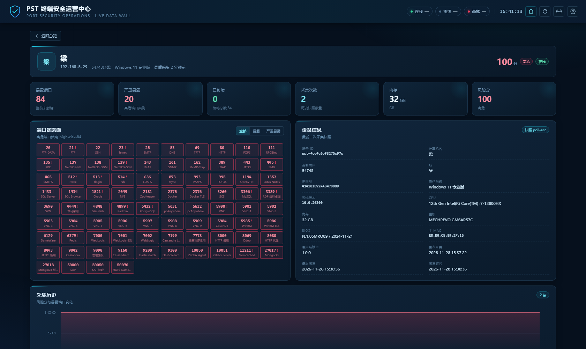
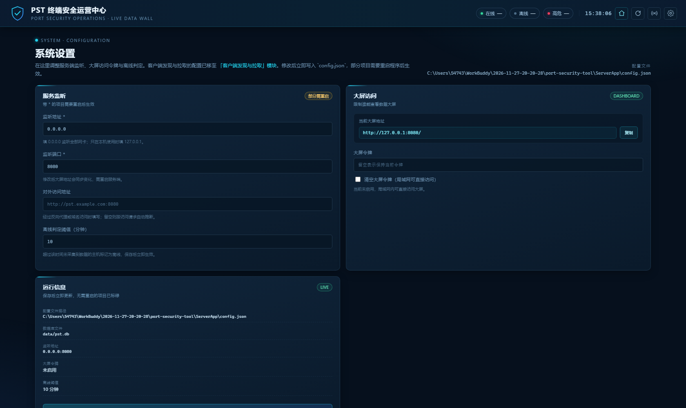

| 项目名称 | 内网终端安全基线管控与数据汇聚平台（网络信息采集和端口管理工具） | 项目类别 | 技术改造 / 自研工具类 |
| 申报单位 | 设备信息科 | 负责人 | （填写人姓名 / 工号） |
| 参与人员 | （填写成员名单） | 完成时间 | 2026 年 11 月 |
| 适用范围 | 单位内网办公终端、服务器、专用设备（Windows 10 / Windows 11 / Windows Server，64 位） | ||
| 一句话简介 | 把「终端安全自查、漏洞封堵、整改跟踪、数据汇总」四件事从人工搬运变成自动执行，一台终端装上即用，管理员在一块大屏上看到全网暴露面。 | ||
单位内网终端数量多、分布散、操作系统与业务软件版本不一，长期依靠"人工巡检 + 表格汇总 + 逐台整改"的方式开展安全自查，存在四个突出痛点：
本项目围绕"摸清家底 → 快速整改 → 自动跟踪 → 数据可视"闭环，自主研发了一套终端侧 + 服务端双端工具，目标是：终端零配置即用、服务端零依赖即部署、整改结果自动回流、管理员一块屏掌握全局。
初版设计沿用"终端定时把数据 POST 到中心"的思路，在真实内网测试时暴露出致命问题：只要终端没有到中心的网络路径、或中间设备拦截了出站，数据就永远收不到。为此项目组重新梳理了数据链路，把通道改为服务端主动发现 + 主动拉取：
改造后，单次全网扫描稳定在 2.2 秒量级完成（原先依赖广播时经常"扫不到"），定时拉取保证数据新鲜度，解决了内网环境下数据"收不回来"的老问题。
| 序号 | 创新点 | 技术做法与价值 | 类型 |
|---|---|---|---|
| 1 | 三路并行局域网发现 | UDP 广播 + UDP 单播 + TCP 端口探测同时进行，规避广播被交换机/防火墙拦截、跨网段广播不通两大顽疾；无需安装任何客户端插件即可发现。 | 架构 |
| 2 | 单向拉取数据模型 | 终端只开放只读拉取接口，服务端定时主动取数；终端不外联、不暴露写接口，符合内网最小暴露原则；服务端取消接收通道后攻击面进一步收敛。 | 架构 |
| 3 | 零依赖单文件交付 | 客户端 90.7 MB 自包含 EXE（含 .NET 运行时），服务端 57.7 MB 单 EXE（内置 SQLite）；目标机无需预装 .NET、Node、VC++ 运行库，双击即用、免安装、免运维。 | 工程 |
| 4 | 84 端口策略化封堵 | 把散落的加固动作沉淀为 5 套场景化策略（防勒索加固、远程入口封堵、弱服务收敛、数据库暴露面收敛、一键全量），终端一键执行、界面逐条可回滚，避免"改不回去"。 | 业务 |
| 5 | 风险量化与闭环看板 | 按暴露端口、严重暴露数、封堵率自动生成 0–100 风险分与高/中/低三档等级，大屏与单机详情同口径呈现，支撑"整改前—整改后"对比与趋势追踪。 | 业务 |
| 6 | 内置受控远程桌面 | 内嵌 SubnetDesk 便携包实现远程协助，且必须由被控端本机用户人工确认、仅对请求方单个 IP 临时放行，用完即恢复，杜绝"为了方便"长期开 3389。 | 安全 |
| 7 | 自检机制保障可维护 | 内置功能自检程序（29 项断言，覆盖契约生成、局域网发现、令牌鉴权、远程桌面放行/还原、实例互斥）与界面自检探针，改完即回归，工具自身可验证。 | 工程 |







| 指标 | 项目值 | 说明 |
|---|---|---|
| 终端采集项 | 38 项 | 主机名、登录用户、域、整机 SN、操作系统与版本、CPU 型号/核心/频率、内存条数与容量、主板与 BIOS、磁盘与分区、网卡 MAC 与 IP，以及 84 个高危端口的逐端口封堵状态。 |
| 高危端口覆盖 | 84 个 | 与行业通行高危端口清单对齐，逐端口展示"已封堵 / 未封堵"，并按严重程度标记严重暴露项。 |
| 单次全网扫描耗时 | 约 2.2 秒 | 三路并行发现，本机实测含 508 个地址网段探测；改造前依赖广播时经常无法发现客户端。 |
| 端到端数据时延 | ≤ 采集间隔 | 客户端按间隔自动刷新本机快照，服务端定时拉取即取即用，大屏数据不依赖人工上传。 |
| 单台终端巡检耗时 | 由 30 分钟级降至秒级 | 过去需登录终端逐项核对端口与硬件信息，现为终端启动即自检、服务端自动回传，人工仅需复核异常项。 |
| 部署成本 | 零采购成本 | 全部自研，服务端零外部依赖单 EXE，终端零安装依赖单 EXE，无需服务器中间件与数据库授权。 |
| 自检通过率 | 29 / 29 项 | 功能自检程序全项通过：报文契约字段一致性、局域网发现应答、拉取接口令牌鉴权、远程桌面放行与还原、实例互斥释放。 |
| 可回滚性 | 100% | 封堵、共享、服务、远程桌面等全部动作均提供"恢复"按钮与一键还原路径，不产生不可逆变更。 |
| 阶段 | 目标 | 主要内容 |
|---|---|---|
| 近期 | 扩大覆盖 + 闭环整改 | 全网终端批量分发安装；大屏增加"整改工单"视角，把未封堵端口按科室派发并跟踪销号；补齐异常告警（新增暴露端口、主机长时间离线）。 |
| 中期 | 基线度量与对标 | 按单位、科室、机型输出封堵率与风险分排行，形成横向对标；沉淀"基线配置"下发能力，由服务端统一下发策略模板，终端一键对齐。 |
| 远期 | 平台化对接 | 与单位既有资产台账、日志审计、态势感知平台对接；数据契约扩展软件版本、补丁、杀毒等采集项，形成终端统一画像。 |
| 序号 | 材料 | 存放位置 |
|---|---|---|
| 1 | 客户端成品：网络信息采集和端口管理工具_v1.0_SubnetDesk.exe（90.7 MB，免安装） | dist/ |
| 2 | 服务端成品：PST-SecurityConsole.exe（57.7 MB，免安装） | ServerApp/dist/ |
| 3 | 客户端源代码与界面源文件（HTA） | NativeApp/、根目录 .hta |
| 4 | 服务端源代码与数据大屏前端 | ServerApp/ |
| 5 | 数据接口说明、JSON Schema、脱敏报文示例 | API接口文档_v1.0/ |
| 6 | 功能自检程序与界面自检探针 | NativeApp/apiprobe/、NativeApp/probe/ |
| 7 | 部署与使用说明 | README.md、ServerApp/README.md |
| 8 | 本项目介绍与界面截图 | 项目介绍/ |